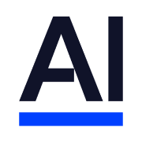

Making the complex
feel effortless.
I’m Sandesh. I build interfaces that work beautifully,
think deeply about systems, and write down what I learn.

AlphaSenseCODE. CARE. CURIOSITY.Under the interface.
The engineering behind better experiences.
Real problems. Lessons from the field.
Reliability is a
user experience feature.
Improving crash-free experiences on the Razorpay Payments Dashboard, from noisy alerts to meaningful signals.
Read the engineering story ↗A shared foundation.
Built to scale.
A monorepo that helps smaller projects adopt one design system, reuse components, and grow on a consistent engineering foundation.
Explore the rearchitecture ↗What does reliability feel like?
Move the slider. See how availability changes the experience.
Illustration: about 1 disrupted session per 1,000.
Things I’ve learned.
Things worth sharing.
Loading field notes…
Engineer by craft.
Curious by default.
I’m a frontend engineer based in Bengaluru, currently working at AlphaSense. I bring a developer’s precision and a designer’s eye to JavaScript, thoughtful interfaces, and reliable systems.
Outside the browser, I’m a dad and husband. You’ll probably find me playing baseball or cricket with my kid, keeping up with tech, or discovering something new online. I’m also drawn to entrepreneurship, travel, fitness, and a good read.
Bachelor in Computer Engineering
University of Pune
Building things. Making memories.
AlphaSense
Staff Engineer
My latest chapter: bringing years of frontend architecture and technical leadership experience to AlphaSense.
Atlassian
Principal Frontend Engineer
Learned how a technology giant operates, leading 20+ engineers as an IC. Cut CI from 50 to 10 minutes and incident acknowledgement from an hour to under five minutes.
Roku
Senior Software Engineer
Worked as a Senior Software Engineer at Roku, adding experience at a global streaming technology company to my frontend engineering background.
Razorpay
Lead → Staff Frontend Engineer
Rearchitected the merchant experience as a PWA and raised crash-free sessions from ~50% to 99.9%. Grew into org-wide technical strategy, setting frontend direction for ~50 engineers.
 Swiggy
Swiggy
Senior Frontend Engineer
Rebuilt Menu, Cart, and Checkout for scale and performance across web and mobile WebViews. Expanded into internal platforms, design systems, and map-based business visualizations.
Zeta
Frontend Engineer
Built mobile WebViews with ~10KB bundles and Aadhaar-based KYC onboarding. Created a scaffolding CLI to help engineers ship WebView apps faster.
- CouponDunia Frontend Engineer
- 2015 — 2016
- mquotient Software Engineer
- 2013 — 2015
- MartJack Intern → Software Engineer
- 2011 — 2013